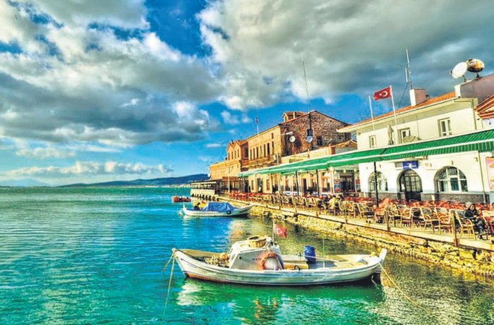
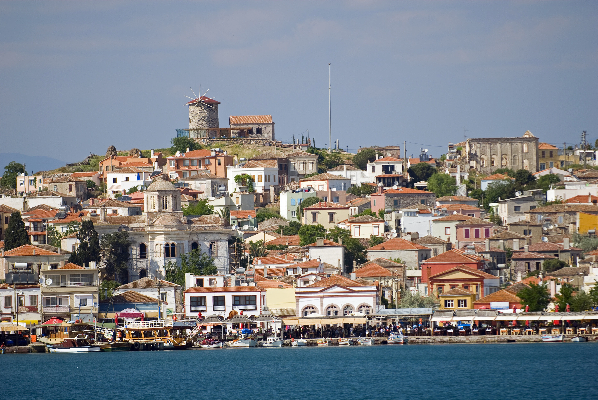
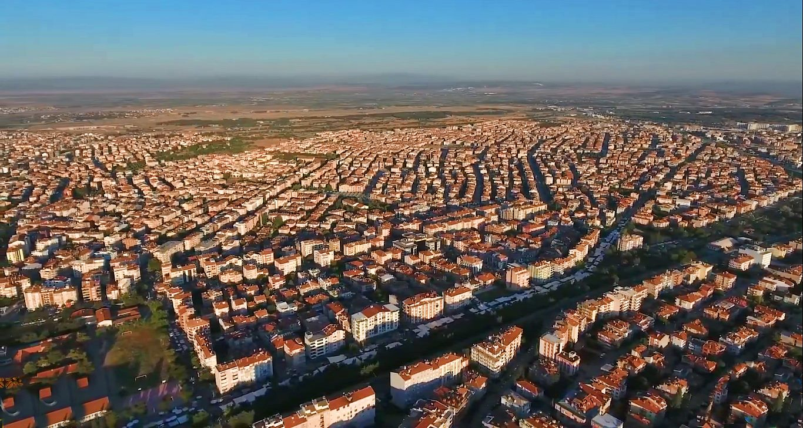
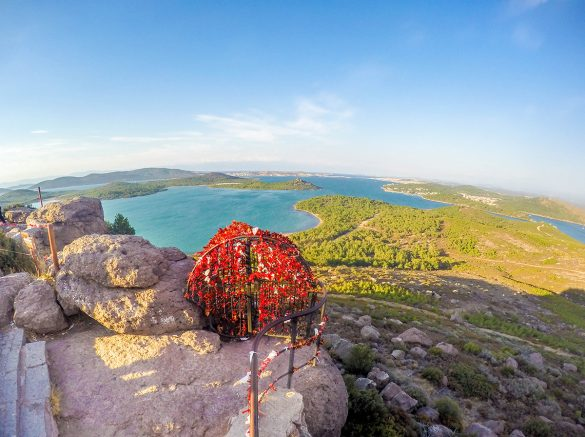
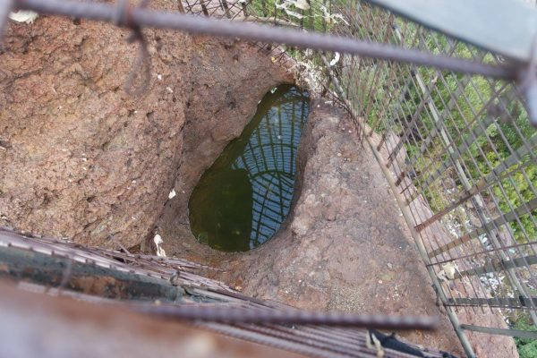

BALIKESİR


Balıkesir, Türkiye'nin en kalabalık on yedinci şehri. Marmara Bölgesi'nin Güney Marmara Bölümü'nde, topraklarının bir kısmı ise Ege Bölgesi'nde yer alan ilin hem Marmara hem de Ege Denizi'ne kıyısı vardır.2019 Yılı verilerine göre nüfusu 1.228.620’dir.
Antik dönemde şehrin bilinen ilk ismi Mysia'dır. Balıkesir adının nereden geldiğine dair birçok rivayet yer almaktadır. Bunlardan ilki ve tarihi bir gerçekliğe dayanan Paleo Kastro (Eski Hisar), Bizans İmparatoru Hadrianus'un av partisi için yaptırdığı hisardan türediği söylemidir. Balıkesir adının nereden geldiği hakkında rivayetler sadece bununla sınırlı kalmayıp tarihçiler, genellikle bal, hisar, balık ve kesir kelimeleri üzerine yoğunlaşmışlardır. Bir söylentiye göre eskiden Balıkesir'e Balık Hisar denmektedir. Burada yer alan balık sözcüğünün anlamı Orta Asya'dan kalma eski Türkçe de şehir, saray ve kale anlamına gelmektedir.
Ayvalık
Turizm alanında büyük bir potansiyele sahip olan ilçede başta Şeytan Sofrası olmak üzere çeşitli doğal güzellikler olmakla birlikte, özellikle eski Rum evleri ve yapılarına dayanan kültür turizmi de gelişmiştir. Özellikle Sarımsaklı Plajları ve Alibey Adası'nda ise deniz turizmi gelişmiştir.
Şeytan Sofrası


Buraya gelenlerin ziyaret etmeden geçemediği yer ise şeytanın ayak izi şeklindeki çukur. Bu çukur tepenin en ucunda bulunuyor ve demir parmaklıklarla çevrili. Çok rüzgârlı olan bu noktada insanlar bu çukura para atarak dilek diliyor ve demirlere kırmızı kurdeleler bağlıyor.
Bu çukurun insanlar tarafından merak uyandıran mitolojik bir hikayesi var. Bu hikâyeye göre; Zeus'un İda adındaki süt annesi, şeytanın Zeus'a zarar vereceğini düşünür ve bundan korkarak şeytanı kovar. Bu şeytanın 3 ayaklı olduğuna inanılır. Kaçarken bıraktığı ayak izlerinden birinin Şeytan Sofrası’nda olduğuna inanılır. Diğerleri ise İda dağlarının eteğinde ve Midilli Adası’ndadır.
Bandırma

Bandırma (Yunanca: Πάνορμος, Panormos), Marmara Denizi'nin güneyinde, Bandırma Körfezi'nin en iç kısmında merkezlenen Balıkesir iline bağlı bir ilçedir. Altıeylül ve Karesi'nin ardından, nüfus bakımından Balıkesir'in üçüncü büyük ilçesidir. Son yıllarda hızla gelişen Bandırma, aynı zamanda Türkiye'nin en büyük limanlarından birine de sahip olan bir ilçedir. Bandırma Limanı'na her gün düzenli olarak İstanbul'dan feribot seferleri yapılmaktadır. Ekonomik olarak oldukça güçlü olan Bandırma, Türkiye için önemli bir sanayi ve tavukçuluk şehridir. Kültür sanat etkinliklerine ev sahipliği yapan şehirde her sene büyük yoğunluk ile turist çekmektedir. 2021 yılı sonu itibarıyla resmî nüfusu 161.894 olarak belirlenmiştir.
Manyas Kuş Cenneti
Yaygın olarak bilinen ismiyle ‘Manyas Kuş Cenneti’ Türkiye’nin en önemli su kuşu üreme ve konaklama alanlarından biridir.Göl; küçük karabatak, tepeli pelikan, küçük akbalıkçıl, gece balıkçılı, sumru, mahmuzlu kız kuşu açısından önemli bir üreme alanıdır. Ak pelikanlar göç döneminde, tepeli pelikan, dikkuyruk ve küçük karabatak kış mevsiminde alanda beslenir. Tatlı iç sularda yaşayan ve küresel ölçekte tehlikede olan Cobitis puncticulata balığı dünya üzerinde sadece burada yaşar. Gölde kerevit avcılığı da yapılmaktadır.
Yapılan sayımlara göre tespit edilen 266 kuş türünün; 64 tanesi her yıl düzenli olarak kuluçka yapmakta, 22 tür bazı yıllar, geri kalan 178 tür ise göç esnasında Millî Park'a uğramaktadır.
Gölde bulunan tatlı su ıstakozu (kerevit) (Astacus leptodactylus Eschscholtz), ihraç edilir. Yılda 150 ton kerevit avlanırken, çıkan hastalık kerevit stoğunu azaltmıştır. Son yıllarda hastalığın etkisi azalmış, av artmaya başlamıştır. Gölde yaşayan balıklardan ekonomik olarak avlananlar şunlardır; sazan, turna, yayın, tatlısu kolyozu, ring...